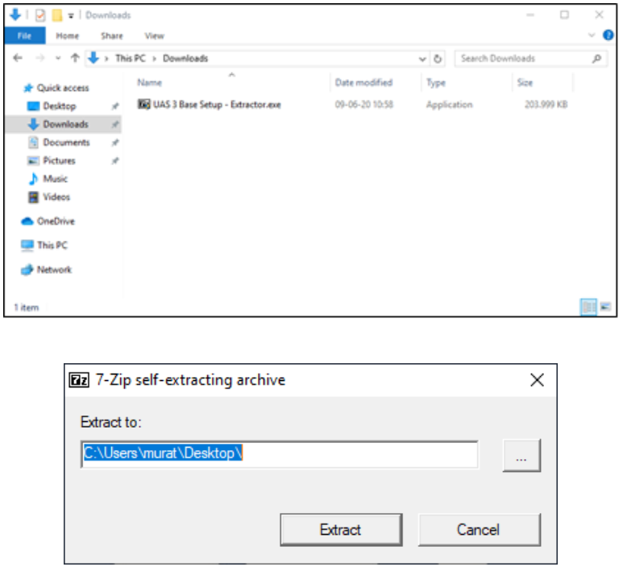
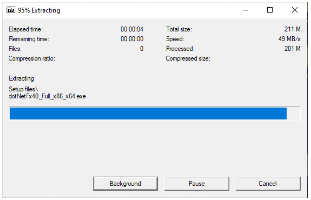
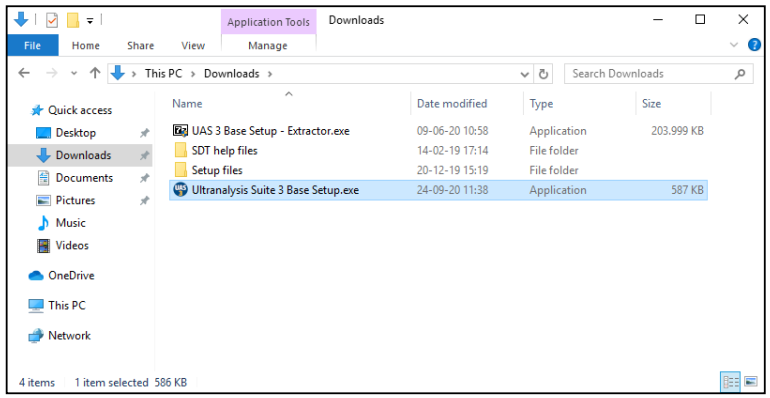

Ultranalysis® installation¶
System requirements¶
- Compatible Operating Systems: Windows 8, 8.1, 10 - 64 Bits
- 1.6 gigahertz (GHz) or faster processor.
- 280 MB available hard disk space USB 1.1 or higher port.
- Sound card and audio output (Dynamic version only).
Download Ultranalysis® Suite 3 Base Setup¶
If you don’t have it yet, you need to download “Ultranalysis Base Setup – Extractor.exe” file. It is available at this location:
Extract Base Setup¶
From your download folder (“C:\Download” is an example), double left click on the file “UAS 3 Base Setup – Extractor.exe” to start the extraction of all setup files. You should see this window:


By default, all files will be extracted at the same location as “UAS Base Setup – Extractor.exe” file, if you wish, you may specify another location at your convenience. Click the “Extract” button to start the extraction. The progress bar will show you the extraction progress, please wait until it’s finished.
When the extraction is finished, you should see (in the folder location you have specified) the same new files as shown on the following Screenshot:

Run Base Setup¶
You must have Administrator rights to proceed from here. Double click on the file "Ultranalysis Suite 3 Base Setup.exe" to start Base Setup installation. You should see the following window:

Select the install type and click the Next button to continue. Read the End User License Agreement and if you agree with it, select “I accept the agreement”. Click the Next button to continue. This step will list all the components the Base Setup will install to your computer. Click the Install button to continue.
Microsoft Visual C++ Redist 2013¶
If the Base Setup was required to install Microsoft Visual C++ 2013 Redistributable (x64), you should see the following window:
Depending on your computer performances, it could take few minutes.
Crystal Reports¶
If the Base Setup needed to install Crystal Reports, you should see the following window: Depending on your system performance it could take a few minutes. Click the Next button to continue. Read the End User License Agreement and if you agree with it, select “I accept the agreement”. Click the Next button to continue. Click the Finish button to finish to installation of Crystal Reports.